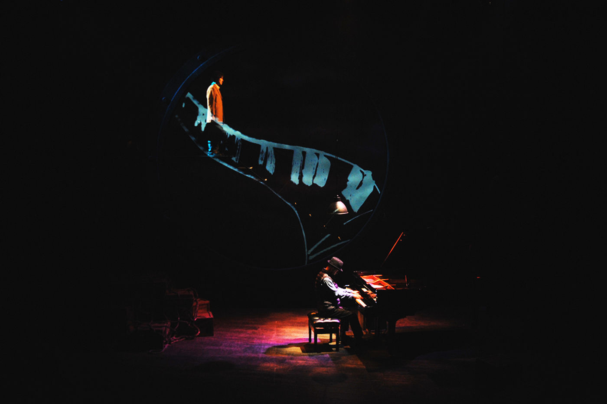
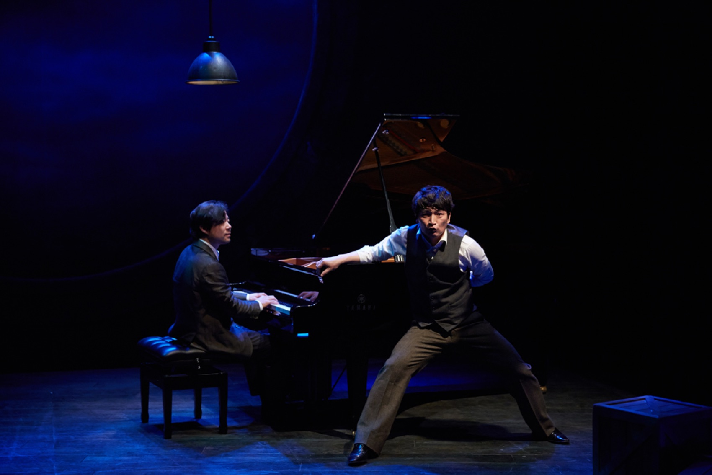
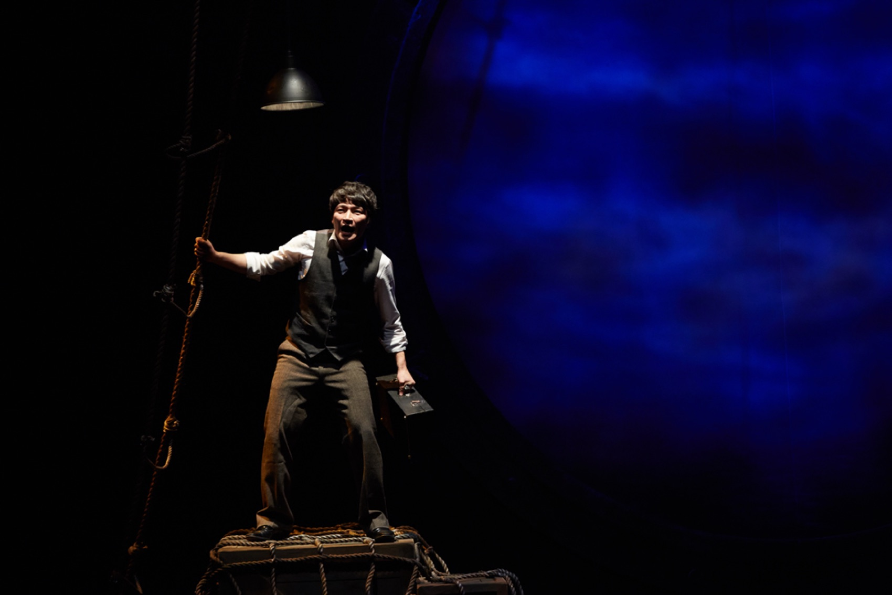
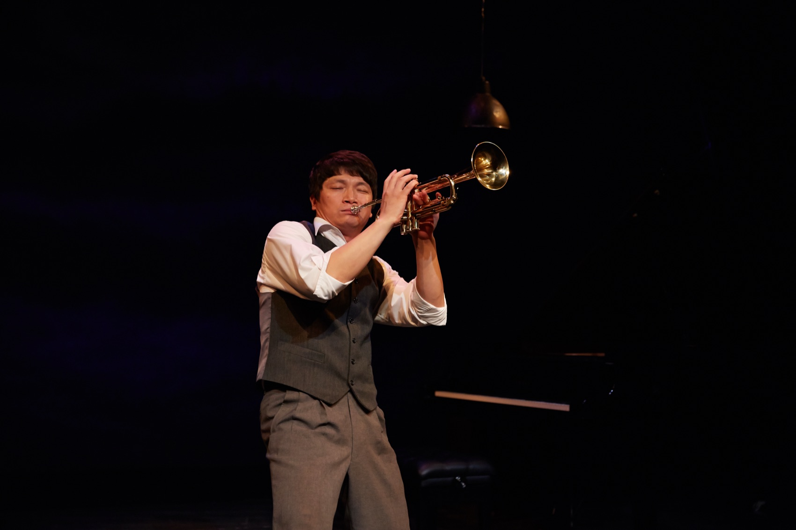
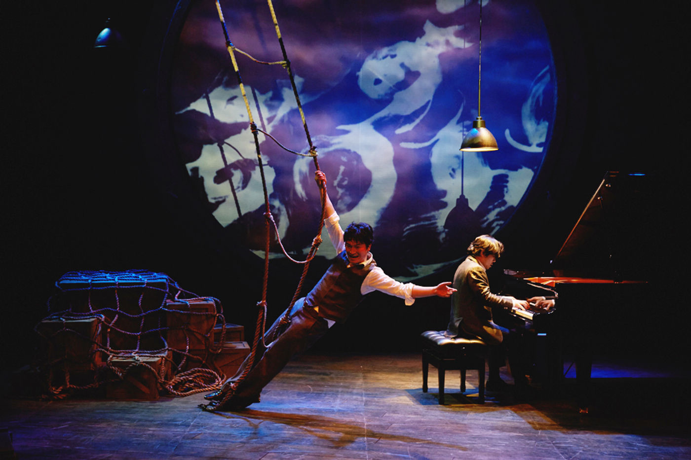
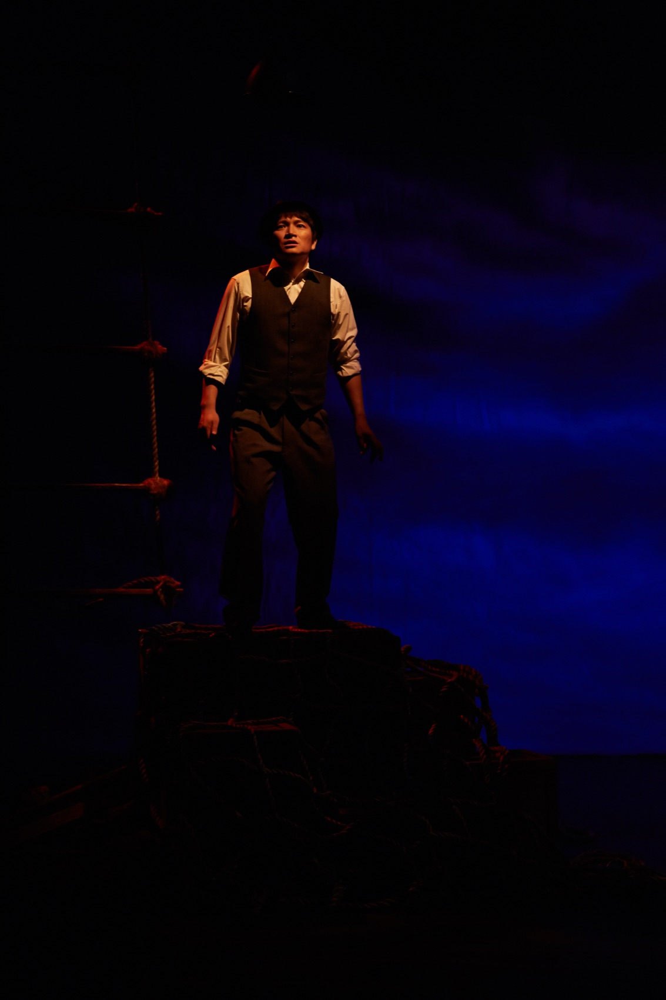
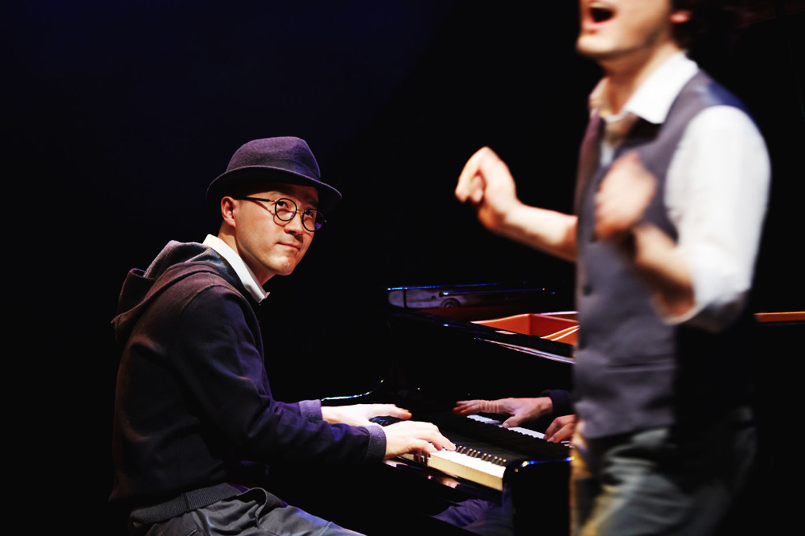

Performance — 2012–2015
Novecento음악극 노베첸토 · 극단 거미
배에서 태어나 단 한 번도 내리지 않은 천재 피아니스트 — 그의 전설을, 한 명의 배우와 한 명의 피아니스트가 라이브로 들려주는 음악극.
A genius pianist born on a ship who never once stepped ashore — his legend, told live by one actor and one pianist.
‘노베첸토’는 이탈리아 작가 알레산드로 바리코의 모놀로그 희곡으로, 1900년대 초 희망을 찾아 신대륙으로 향하던 여객선 버지니아호에서 태어나 죽을 때까지 평생을 배 위에서 보낸 당대 최고의 피아니스트 노베첸토의 이야기를, 그의 친구인 트럼펫 주자 맥스의 회상으로 전합니다. 1998년 주세페 토르나토레 감독과 엔니오 모리코네의 영화 ‘The Legend of 1900’(국내 개봉명 ‘피아니스트의 전설’)의 원작이지만, 원작이 희곡이라는 사실은 거의 알려지지 않았습니다. 2012년 극단 거미가 이 희곡을 국내에 처음 소개했습니다.
무대에는 단 한 명의 배우와 한 명의 피아니스트만 존재합니다. 배우는 맥스이자 노베첸토이자 주변 인물들로 변신하고, 피아니스트는 대사 없이 노베첸토 그 자신으로 소개되어 배우와 눈빛을 주고받으며 연기합니다. 극 전체가 드라마의 구조와 얽혀 연주가 극의 전개와 리듬에 관여하는, 연극과 연주회가 동시에 벌어지는 무대 — 그 위에 연출가이자 미디어아티스트 김제민의 영상이 바다와 배의 시간을 드리웁니다.
Baricco’s monologue tells of Novecento, the finest pianist of his age, born aboard the liner Virginian as it ferried hope toward the New World, who spent his whole life on the ship — recalled by his friend, the trumpeter Max. It is the source of Tornatore and Morricone’s film ‘The Legend of 1900,’ though few knew the original was a play; in 2012 Theatre Company Geomi introduced it to Korea for the first time. On stage are one actor and one pianist only: the actor becomes Max, Novecento and everyone around them, while the pianist — introduced as Novecento himself — plays without a word, trading glances with the actor. The music is woven into the drama’s structure and rhythm, a play and a recital happening at once, with Kim Jae Min’s video casting the time of sea and ship across it.
“누군가에게 들려줄 만한 이야기가 있다면, 결코 실패한 게 아니다.”
그에게는 그런 이야기가 있었어요. 말도 안 되지만 정말 아름다운… 그리고 그날, 그 다이너마이트 더미 위에 앉아서, 나한테 들려줬어요. 그 전설 같은 이야기를.“If you have a story worth telling someone, you have not failed.”
He had such a story. Impossible, and truly beautiful… and that day, sitting on that pile of dynamite, he told it to me. That legend of a story.— 극 중에서
— From the play
- 작
- Written by
- Alessandro Baricco
- 번역
- Translation
- 조은정
- 각색·연출·영상
- Adaptation, direction, video
- 김제민 Kim Jae Min
- 배우
- Actors
- 조판수 · 이건영 (맥스 役)
- Cho Pan-su · Lee Gun-young (as Max)
- 피아니스트
- Pianists
- 박종화(클래식) · 곽윤찬(재즈)
- Park Jong-hwa (classical) · Kwak Yun-chan (jazz)
- 스태프
- Staff
- 음악감독 김병제(2012) · 무대 이진석 · 조명 최치환/성미림 · 소리악기연주 지재우 · 프로듀서 송희경 · 조연출 김혜진
- Music director Kim Byung-je (2012) · set Lee Jin-seok · lighting Choi Chi-hwan / Sung Mi-rim · sound-object performance Ji Jae-woo · producer Song Hee-kyung
- 제작·기획
- Production
- 극단 거미 · Production Q
- Theatre Company Geomi · Production Q
- 키워드
- Keywords
- Alessandro Baricco · monodrama · live piano · classic & jazz
형식 — 연극과 연주회 사이
The form — between a play and a recital
50석 소극장에 그랜드피아노를 들이다
A grand piano in a fifty-seat theatre
이 작품이 동명의 영화와 다른 점은 극장의 현장성입니다. 연출은 소극장이기에 스피커를 통한 음향효과를 일체 사용하지 않고 모든 소리를 라이브로 만들었고, 최고의 연주를 들려주기 위해 50석짜리 소극장 연극실험실 혜화동1번지에 그랜드피아노를 들였습니다. 그리고 현직 서울대 음대 교수인 클래식 피아니스트 박종화를 연극 무대에 연주자로 세웠습니다 — 보수적인 국내 클래식계에서는 상상하기 어려운 시도였지만, 해외에서 작업해 온 그는 즉흥연주와 연기까지 소화하며 협업을 즐겼습니다.
극 중 레퍼토리는 라흐마니노프, 모차르트, 무소륵스키에서 한국 동요 ‘고향의 봄’ 변주와 즉흥연주까지 이어지며 음악과 극이 혼연일체가 됩니다. 2013년 신촌 더 스테이지 공연부터는 재즈 피아니스트 곽윤찬이 더블캐스팅되어, 같은 이야기를 클래식 버전과 재즈 버전 두 갈래로 비교하며 감상할 수 있게 했습니다. 배우 조판수·이건영과 두 피아니스트 — 4인의 조합이 만드는 4색의 무대입니다.
What sets the stage work apart from the film is its liveness. In a small theatre, the direction abandoned all speaker-borne sound — everything was made live — and a grand piano was brought into the fifty-seat Hyehwa-dong 1st. The classical pianist Park Jong-hwa, a professor at Seoul National University, took the stage as a performer — unthinkable to the conservative classical establishment, yet he embraced the collaboration, improvising and even acting. The repertoire runs from Rachmaninoff, Mozart and Mussorgsky to variations on the Korean children’s song ‘Spring of My Hometown’ and free improvisation. From the 2013 run, jazz pianist Kwak Yun-chan joined in double casting, letting audiences compare the same story in classical and jazz versions — two actors, two pianists, four combinations, four colours.
- 묻는 것
- The question
- 평생 배 위에 살면서 육지를 밟지 않았지만, 세상이 그 배를 경유해 갔고 노베첸토는 그 세상을 상상하며 88개의 건반으로 자신의 음악을 연주했다. 새로운 세상으로의 모험 대신 자신이 살아온 세계의 행복을 선택하고, 그렇게 자신의 삶을 완결한다. — “진정 자신의 선택으로 자신의 삶을 살고 있는가?”
- He never touched land, yet the world passed through his ship, and he played his own music on 88 keys while imagining it. Over the adventure of a new world he chose the happiness of the world he had lived — and so completed his life. — “Are you truly living a life of your own choosing?”
연혁 — 다섯 번의 항해
History — five voyages
2012–2015, 다섯 극장
Five theatres, 2012–2015
2012
연극실험실 혜화동1번지
Hyehwa-dong 1st
11. 28 — 12. 2, 5기동인 가을페스티벌 참가작으로 국내 초연. 50석 소극장에서 배우 조판수와 피아니스트 박종화가 무대에 섰다.
28 Nov – 2 Dec. The Korean premiere, at the company’s Autumn Festival — Cho Pan-su and Park Jong-hwa in a fifty-seat house.
2013
신촌 더 스테이지
Shinchon the Stage
12. 6 — 12. 29, 4주 장기공연. 이건영·곽윤찬이 합류해 클래식·재즈 두 버전의 더블캐스팅으로 확장되었다. 러닝타임 90분.
6–29 Dec, a four-week run. Lee Gun-young and Kwak Yun-chan joined — classical and jazz versions in double casting. 90 minutes.
2014
정동 세실극장 · 제주 해비치
Jeongdong Cecil · Jeju Haevichi
정동 세실극장 공연에 이어 제주 해비치 아트 페스티벌 쇼케이스에 초청되었다.
A run at the Cecil Theater, followed by an invited showcase at the Jeju Haevichi Art Festival.
2015
의정부예술의전당 소극장
Uijeongbu Arts Center
다섯 번째 무대. 4년에 걸친 항해의 마지막 기착지.
The fifth staging — the final port of a four-year voyage.
공연 기록 — 2012–2015
Performance record — 2012–2015





